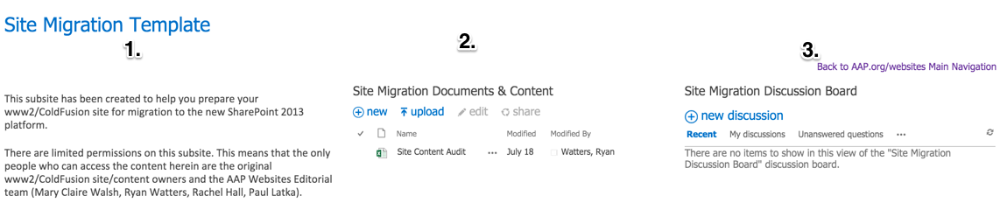

| Migration Checklist | |
|---|---|
| Meet with Editorial and Set Up Migration Team Site | |
| Audit All PDFs and Images on Current Site | |
| Audit All Pages on Current Site | |
| Decide Site Structure and Design | |
| Preview Final Site with Editorial | |
| Publish Your New Site to AAP.org | |
If you've arrived at this screen, you have already emailed Ryan Watters and now have a new team site on AAP.org/websites.
Introduction
This is a "content-first" migration. We begin by collecting, editing, and creating all of the "articles" for your site. Articles are your content. They are the bottom level of site and subsite architecture on AAP.org.
AAP.org Subsite Architecture
The site architecture of AAP.org is hierarchical. The AAP.org parent site (think of the AAP.org home page) sits at the top. The children (subsites) are underneath. A subsite may also have subsites, which would then be sub-subsites of the original subsite's parents.
Regardless of position in the hierarchy, all sites in the AAP.org site collection have either a two-tiered (1) or three-tiered (2) structure:


The bottom levels are the same for both architectures. This bottom level is composed of your articles. Articles include both web pages (.aspx) and print documents (.pdf). The first step of your migration involves an audit of all your article pages (i.e., content).
Do not be discouraged by the more technical elements of this process. Site migrations are stepwise and linear and involve continual interaction with Editorial. In fact, you've already begun the process by having a team site created for your migration.
Your Team Site
You should have a team site under AAP.org/websites. This team site is a centralized workspace for you and your team during this migration.
To find your team site, you can go to the Migrations Section of AAP.org/websites and select your team site from the list on the left.
1.

2.

The Three Sections of Every Team Site

- Site Explanation.
- Document Library.
Collect and organize all documents related to the migration here. - Discussion Board.
Conduct conversations regarding the migration. Only your team and Editorial have access to this discussion board. The board is better than email.
What's Inside the Document Library
- Content Audit Spreadsheet (Excel)
You will use the spreadsheet during each step of your migration. More extensive directions are found in the spreadsheet itself. There are five tabs:- How-To and Content Ownership Information
Let us know who the author and approver are for the site. - PDFs
A list of all PDFs from your existing site. Editorial has gone through the process of collecting all PDFs from your current site, made all file names lowercase, and prepended each document with the new naming convention. This is to give you a head start. - Images
Most migrations include very few images. By default, this tab is typically empty. - Web Pages
All the pages in your current site. - Site Preview
Information regarding the final step before publication.
- How-To and Content Ownership Information
- The PDFs and Images Folder
The PDFs from your existing site as they were available to Editorial. You can add images and new PDFs to this library as well. The collection of PDFs will be used during the first part of your audit.
Audit Your PDFs
Your first step in the content audit is to go through your existing PDFs and images. Web pages are almost always preferred over PDFs, but if you need to include non-web-page content, it's best to avoid proprietary file types—e.g., Excel, Word, and PowerPoint—since not all users can open these filetypes in their browsers.
- Decide which PDFs you want to keep and whether the content is gated (i.e., for the public or restricted to members). Only keep images that are vital to your content (eg, headshots, logos, or photos taken by members). Logos need to be submitted in their original design file format (.eps, .svg, .ai) to Ryan Watters.
- Of the PDFs you're keeping, decide which are better suited as web pages.
- If the PDF would work better as a web page, you will need to create the page as an MS Word document that includes the appropriate front matter.
- If you want to keep it as a PDF, you will need to rename the PDF, optimize it for the web, and tag it appropriately appropriately in the Content Audit Spreadsheet. The same applies for your images.
With images, only migrate those images that you feel aren't replaceable by Editorial's stock photography service. Images to migrate include headshots of staff or members, photos unique to your brand, and logos, the last of which should be submitted separately to Ryan Watters so that Editorial can keep a lossless (ie, a version that doesn't lose quality through multiple manipulations) version of your logo.
- Your images need to be optimized according to image standards.
- Name your images according to the new naming conventions.
- As with all content, everything being carried over during this migration will need to be tagged; you will notice in your content audit spreadsheet that dropdowns have been provided for you to tag each individual PDF before handing it over to editorial. Images (3rd tab) require fewer tags since you only need to add a few managed keywords for each image. Do not worry about transferring stock photography.
Once you've finished auditing your PDFs and images, select the Email Icon below:
CONGRATULATIONS ON COMPLETING PART 1 OF YOUR MIGRATION
You are well on your way to migrating content to the new SharePoint 2013 platform. Editorial will begin migrating your audited content to the root document library. We will take care of all tagging and will double check naming conventions. That said, we cannot migrate documents that have not been appropriately tagged in your content audit spreadsheet.
Once complete, Editorial will fill in the "Permalink URL" column in your Content Audit Spreadsheet. Do not begin the second part of your migration until you have received the URLs from Editorial, since you will not be able to create web pages in Word until you have the appropriately links for your documents. While waiting for the PDF portion of your audit to be completed, you may want to look into how you will be creating web pages.